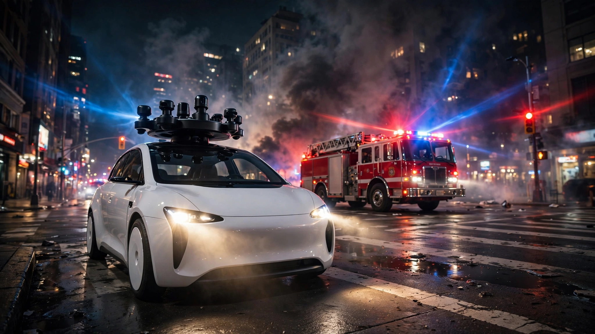

Waymo Handles 50,000 Emergency Vehicle Encounters a Week. At 62,800 Robotaxis, That Math Breaks.
NHTSA just called robotaxis "a danger to the general public." Cross-referencing Waymo's own emergency-interaction data with Goldman Sachs' 2030 fleet projections reveals that safe coexistence with first responders requires six nines of software reliability, a standard no deployed system has ever met in unstructured real-world conditions.

Fifty thousand. Every week, Waymo's robotaxis encounter active emergency vehicles that many times in California alone, according to a company spokesperson responding to NHTSA's blistering letter this week, who added that Waymo "appropriately interacts" with emergency responders in the overwhelming majority of those encounters and has trained more than 35,000 first responders on how to work around its vehicles.
Waymo offered the figure as a point of pride. But follow the math forward a few years, applying that encounter rate to the fleet sizes Goldman Sachs projects by 2030, and the number stops feeling reassuring and starts looking like the outline of an impossible engineering problem that nobody in the industry has publicly confronted in any earnings call, regulatory filing, or investor presentation.
Morrison's Letter Drops the Diplomatic Mask
On Wednesday, NHTSA Administrator Jonathan Morrison published an open letter to the autonomous vehicle industry that dispensed with the usual regulatory hedging so completely it read more like an indictment than a request for comment. "To state it bluntly," Morrison wrote, "an AV that cannot safely interact with first responders is a danger to the general public." He documented a "clear pattern" of autonomous vehicles driving directly into active emergency scenes, blocking ambulances and firefighters, and failing to recognize basic safety signals like flashing lights, flares, smoke, fire, and traffic cones, a catalog of failures that would earn any human driver a suspended license and possible criminal charges.
He explicitly rejected the industry's preferred framing. Companies call these "edge cases." Morrison called that characterization wrong, noting that emergency scenes are neither rare nor extreme, then drove the point home with a line that should be tattooed on the wall of every AV engineering office in the country: "Every second matters when law enforcement officers, firefighters, or paramedics are answering a call, and when an AV disrupts those responders, it ceases to be a minor software anomaly." NHTSA is scheduling meetings with each driverless vehicle developer by the end of July, with enforcement action threatened for companies that fail to deliver credible solutions.
Timing tells its own story here. Last weekend, during San Francisco's Fourth of July celebrations, a Waymo drove directly over illegal fireworks laid in the street while a passenger filmed the entire thing, a separate unoccupied Waymo drove over a firework and caught fire, and multiple robotaxis became trapped in post-fireworks traffic for so long their batteries died and required towing. Weeks earlier, a Waymo drove into floodwaters in Atlanta. In 2025, one entered an active police scene in Los Angeles. Individually, anecdotes. Collectively, data.
Running Waymo's Number Forward
Fifty thousand weekly emergency encounters in California. Start there and do what nobody in the industry's communications team has done: follow the arithmetic to its destination.
Waymo operates approximately 4,000 vehicles across 11 U.S. cities, with California, home to San Francisco, Los Angeles, and surrounding service areas, accounting for roughly half that fleet, or about 2,000 vehicles. Divide 50,000 encounters by 2,000 vehicles and each California robotaxi meets an active emergency vehicle approximately 25 times per week, which works out to 3.6 encounters per day, roughly once every seven hours of operation, a frequency that makes Morrison's dismissal of the "edge case" framing look mathematically airtight.
Reframe it in miles and the picture sharpens. Waymo logs roughly 4 million autonomous miles per week nationwide, a figure confirmed by co-founder Dmitri Dolgov in a March 2026 interview. If California accounts for half of that mileage, 2 million weekly miles produce 50,000 encounters, meaning every 40 miles of city driving brings a robotaxi face-to-face with an active ambulance, fire truck, or police cruiser.
None of this should surprise anyone who has spent five minutes driving through San Francisco. According to the National EMS Information System, 60.3 million EMS activations were recorded in 2024 across 54 participating states and territories, while the U.S. Fire Administration logged 1.39 million fires the same year with EMS and rescue calls representing 65.1% of all fire department responses, a combined workload that means tens of thousands of emergency vehicles are running lights and sirens across American cities at any given hour, and in dense urban cores that density compresses to a near-constant background frequency that every driver, human or silicon, must navigate continuously.
Goldman's Fleet Meets the Encounter Multiplier
Goldman Sachs projects that by 2030, the U.S. commercial robotaxi fleet will reach 62,800 vehicles in a market approaching $19 billion. Waymo alone is targeting 1 million paid rides per week by the end of this year, up from the current 500,000, and Hyundai is reportedly in discussions to supply 50,000 vehicles, a 12-fold increase over today's fleet size that would make Waymo's California operation look like a proof-of-concept in retrospect. Amazon's Zoox is expanding to four new cities simultaneously, and Tesla's robotaxi service, which launched in Austin in June, just opened in Miami and shows every sign of Musk-pace scaling ambitions regardless of readiness.
If the per-vehicle encounter rate holds at anything close to current levels, and it will hold as long as fleets stay in urban cores where ride-hailing economics work, the math becomes straightforward and sobering.
At today's roughly 1,000 miles per vehicle per week, 62,800 vehicles will drive 62.8 million miles weekly. At one emergency encounter every 40 miles, that produces 1.57 million emergency vehicle interactions per week, or approximately 81.6 million per year.
| Success Rate | Nines | Annual Failures | Daily Failures |
|---|---|---|---|
| 99% | 2 | 816,000 | 2,236 |
| 99.9% | 3 | 81,600 | 224 |
| 99.99% | 4 | 8,160 | 22 |
| 99.999% | 5 | 816 | 2.2 |
| 99.9999% | 6 | 82 | 0.22 |
Read that table slowly, because it contains the core tension of the entire autonomous vehicle industry. Four nines of reliability, the standard Amazon Web Services guarantees for its S3 object storage availability, still produces 22 problematic first-responder interactions every single day across the United States when applied to Goldman's projected fleet. Five nines, the gold standard enterprise cloud computing providers aspire to and frequently miss, yields more than two failures per day, roughly 800 per year, each one representing a fire truck that cannot reach a burning building or an ambulance that cannot reach a cardiac arrest victim because a two-ton computer decided to stop in the wrong lane and cannot be reasoned with by anyone standing next to it.
Getting below one failure per day nationally demands a success rate above 99.9996%. Between five and six nines. For software running not on climate-controlled server racks but on rain-slicked streets at midnight.
Why No Deployed System Has Ever Met This Bar
AWS S3 promises 99.99% durability for data stored on hardware Amazon fully controls in buildings Amazon owns, with redundancy Amazon designs from the power supply up, and even that service still experiences outages that make headlines because four nines allows 52 minutes of downtime per year and those minutes inevitably cluster at the worst possible time in ways that feel personal even though they are statistical. Google Cloud's SLA ranges from 99.95% to 99.99% for most compute services. Achieving these numbers has cost hundreds of billions of dollars in monitoring, failover, and fault-tolerant architecture, and the numbers remain aspirational targets rather than guarantees, frequently breached during storms, fiber cuts, and cascading configuration errors.
Commercial aviation achieves approximately seven nines per flight hour, but that standard required a century of regulation, standardized procedures, controlled airspace, and an industry culture where every deviation triggers a root-cause analysis that can ground an entire fleet, and the key word in that sentence is "controlled," because pilots communicate with a single air traffic system using standardized phraseology, aircraft fly in designated corridors, and the environment, while occasionally turbulent, is structured in ways that American city streets are categorically, irreducibly not.
Consider what a robotaxi actually confronts when it encounters an emergency scene, and consider how wildly it differs from one encounter to the next. Firefighters drag hoses across intersections in patterns that change as the incident evolves. Police officers wave traffic through with hand signals that vary by department, by individual officer, and by the urgency of the moment, gestures that nobody has standardized and nobody will standardize because the whole point of hand signals in emergencies is improvisational speed. Ambulances stop in travel lanes, bike lanes, crosswalks, or sidewalks depending on where the patient collapsed, a variable no geofence can predict. Cones go up in ad-hoc arrangements, flares get knocked around by passing vehicles, and civilians stand in the road gawking, filming, or trying to help in ways that no training dataset fully anticipates because the configurations of human chaos at an emergency scene are, in the mathematical sense, combinatorially infinite.
What One Failure Actually Costs
Survival from out-of-hospital cardiac arrest drops by 7 to 10 percent for every minute of delayed defibrillation, according to the American Heart Association, a curve so steep that the difference between a four-minute and a five-minute ambulance arrival can determine whether a patient walks out of the hospital or never regains consciousness. Roughly 350,000 out-of-hospital cardiac arrests occur in the United States each year, and even if a robotaxi blocks an ambulance for 60 seconds during just 0.01% of those events, that is 35 incidents per year where the delay measurably reduced a human being's probability of surviving.
Structure fires follow a parallel arithmetic of urgency. NFPA Standard 1710 calls for first-engine arrival within four minutes of turnout, a benchmark set by the physics of flashover, the point at which a room fire transitions from containable to unsurvivable in roughly 5 to 8 minutes after ignition, and a 90-second delay caused by a robotaxi that has stopped in the only lane a fire truck can use to reach a narrow residential street could be the gap between a kitchen fire that stays in the kitchen and one that kills two sleeping children in the bedroom above.
Morrison's letter acknowledged this without flinching. "Every second matters." In emergency medicine and fire suppression, that is not bureaucratic rhetoric but a documented physical fact with survival curves, property-loss functions, and body counts behind it, and the people who wrote those curves did not build in an exception for autonomous vehicles with impressive quarterly metrics.
Steelmanning the Other Side
Here is the strongest case that NHTSA's alarm is misplaced, stated at full strength because it deserves to be.
Human drivers are atrocious at interacting with emergency vehicles. They freeze, they panic, they pull to the wrong side, they fail to yield entirely, and they rubber-neck into secondary collisions that create new emergencies out of existing ones, a litany of failure so routine that emergency responders have a grim term for it: "the second crash." According to the National Safety Council, approximately 60,000 emergency vehicle crashes occur in the United States each year, killing an estimated 100 people and injuring more than 12,000, with a significant fraction involving motorists who were too distracted, too confused, or too chemically impaired to respond correctly to flashing lights and sirens. If Waymo's "appropriate interaction" rate genuinely exceeds 99.9%, it is plausible that Waymo is already better than the average human driver at handling emergency encounters, and the relevant comparison is not perfection but the terrifying baseline we accept today without a congressional hearing.
Fleet growth also creates a self-correcting data loop: each problematic encounter generates training signal, Waymo's 6th-generation Driver, now entering production at its Mesa, Arizona factory, incorporates lessons from every prior incident across every city in the operating footprint, and reliability improves with data in ways that human driving skill, which plateaus at about age 25 and degrades from there, simply does not.
Where the Counterargument Breaks Down
But it fails on a critical dimension that aggregate reliability statistics cannot capture: the escalation path.
When a human driver blocks a fire truck, a firefighter can make eye contact, shout, gesture with escalating urgency, physically bang on the window, and, if nothing else works, direct someone to push the car out of the way, all within seconds, all drawing on a shared vocabulary of crisis that both parties understand instinctively because both are human beings who recognize what desperation looks like in another person's face.
A robotaxi that has entered an emergency scene and lost situational awareness cannot be shouted at. It cannot read a firefighter's body language or interpret the difference between an angry wave and a directional gesture. Its remote operator, if one is connected at all, may be managing multiple vehicles across multiple cities with a latency window that turns real-time crisis management into a laggy video game where the stakes are measured in cardiac arrest survival curves rather than points. Morrison highlighted this broken escalation path specifically because it represents a qualitative gap that no amount of improvement to the nominal success rate can close: the failure mode is not that the car is dumber than a distracted human but that no human standing next to it can intervene in the five seconds that matter.
And the "better than human" argument carries a hidden structural flaw that becomes lethal at fleet scale. Human driving failures are distributed across 280 million individual drivers making independent decisions in independent vehicles with independent failure modes, which means a traffic jam caused by one panicking human does not predict anything about the next human a block away. Fleet failures correlate. Shared software, shared sensor limitations, and shared training gaps can cause thousands of vehicles to fail the same way on the same night, as San Francisco's Fourth of July demonstrated when multiple Waymos failed simultaneously in identical traffic conditions, unable to adapt because they were all running the same decision architecture that lacked a model for "the entire city has shut down for fireworks and nothing in the training data looks like this."
Limitations
Several assumptions carry genuine uncertainty that could shift these conclusions in either direction. Waymo's 50,000-encounter figure comes from a spokesperson and has not been independently verified, while "appropriately interacts" remains undefined and could encompass everything from smoothly yielding to an approaching ambulance to awkwardly braking 50 feet too late but ultimately clearing the path, a quality distribution that matters enormously and is not public.
Encounter rates per mile may not scale linearly with fleet growth, because if robotaxis expand into lower-density suburbs, the frequency of emergency encounters per mile would decrease, though the counterargument is that fleet concentration will likely remain in dense urban cores where the per-ride economics justify the capital outlay, which is exactly where the encounter frequency is highest. Goldman's 62,800-vehicle projection is a mid-case scenario that could prove optimistic if regulation stalls deployment, or conservative if cost breakthroughs and permissive state legislatures accelerate it.
Cloud computing and aviation reliability comparisons are directionally useful but imperfect because these systems operate in fundamentally different domains with different failure physics and different consequences per incident.
What You Can Do
If you are a city official or first-responder leader: demand that AV operators in your jurisdiction provide granular emergency encounter data, not just aggregate success rates but the failure distribution showing how many encounters resulted in a delay of 10 seconds or more, 30 seconds, and 60 seconds, because an average masks the tail that kills people. Push for standardized emergency-vehicle interaction protocols across all AV companies so your firefighters do not need different procedures for Waymo, Zoox, and Tesla vehicles at 2 AM on a Tuesday, and lobby NHTSA to require encounter-level reporting in the next amendment to the Standing General Order, because the current crash-focused framework misses every incident where the ambulance arrived late but nobody died yet.
If you work in AV engineering: Morrison's letter is an opportunity, not a threat, because building a credible dedicated emergency-vehicle interaction mode, essentially geofenced ultra-conservative behavior triggered by any detected siren, strobe, or emergency radio frequency, would become a competitive advantage that determines which cities let you expand next and which cities keep you in perpetual pilot-program limbo. Treat first-responder interoperability as a safety-critical subsystem with its own verification regime and separate failure budget.
If you are a passenger or potential rider: today's fleet of 4,000 vehicles handles emergency encounters with genuinely impressive reliability, and the risk to any individual rider is vanishingly small compared to the baseline risk of riding with a human driver checking their phone at 65 miles per hour. What matters for public safety is whether the reliability curve bends steeply enough to stay ahead of the deployment curve as that fleet multiplies 15-fold over the next four years.
The Bottom Line
NHTSA's letter lands at a moment when the robotaxi industry's biggest vulnerability is not performance but the collision between performance and scale. Waymo is running roughly 500,000 paid rides a week across 11 cities with 4,000 vehicles, targeting 1 million by year's end, and just announced expansion to four more cities, with a $126 billion valuation fueling the push and competitors from Amazon and Tesla accelerating the pace.
At projected 2030 scale, this fleet will encounter emergency vehicles roughly 82 million times per year, and making those encounters safe enough that Americans accept autonomous vehicles sharing the road with their local fire department requires between five and six nines of reliability, a standard that exceeds what the most sophisticated cloud computing infrastructure on Earth can guarantee, applied to the least controlled operational environment in all of transportation. Morrison called robotaxis a danger. He is right, but not for the reason his letter implies. What is dangerous is not that the technology is bad, because by most available measures it is already quite good, but that "quite good" and "good enough for 82 million encounters a year" are separated by three orders of magnitude of reliability, and nobody in the industry has yet acknowledged which side of that gap they are standing on or how they plan to cross it.